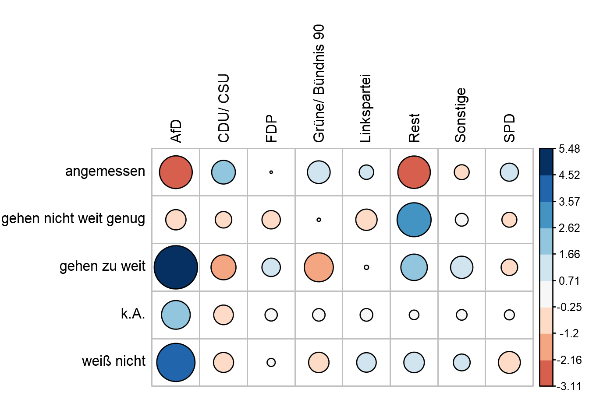
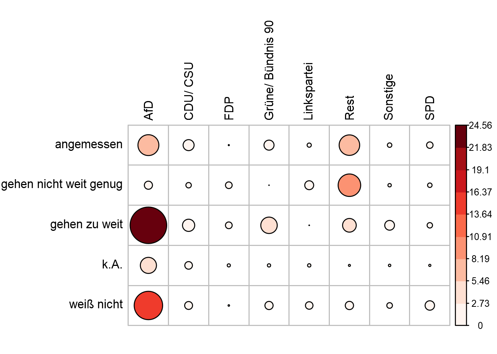

<!DOCTYPE html>
<html lang="" xml:lang="">
<head>

  <meta charset="utf-8" />
  <meta http-equiv="X-UA-Compatible" content="IE=edge" />
  <title>8 Zusammenhänge zwischen kategorialen Variablen | How 2 do Things with Numbers (SS 2022)</title>
  <meta name="description" content="8 Zusammenhänge zwischen kategorialen Variablen | How 2 do Things with Numbers (SS 2022)" />
  <meta name="generator" content="bookdown 0.24 and GitBook 2.6.7" />

  <meta property="og:title" content="8 Zusammenhänge zwischen kategorialen Variablen | How 2 do Things with Numbers (SS 2022)" />
  <meta property="og:type" content="book" />
  
  
  
  

  <meta name="twitter:card" content="summary" />
  <meta name="twitter:title" content="8 Zusammenhänge zwischen kategorialen Variablen | How 2 do Things with Numbers (SS 2022)" />
  
  
  

<meta name="author" content="Kami Höferl | https://orcid.org/0000-0002-5397-180X" />


  <meta name="viewport" content="width=device-width, initial-scale=1" />
  <meta name="apple-mobile-web-app-capable" content="yes" />
  <meta name="apple-mobile-web-app-status-bar-style" content="black" />
  
  
<link rel="prev" href="07_n_kategoriale_variablen.html"/>
<link rel="next" href="09_deskriptive_statistik_metrisch.html"/>
<script src="libs/header-attrs-2.12/header-attrs.js"></script>
<script src="libs/jquery-3.6.0/jquery-3.6.0.min.js"></script>
<script src="https://cdn.jsdelivr.net/npm/fuse.js@6.4.6/dist/fuse.min.js"></script>
<link href="libs/gitbook-2.6.7/css/style.css" rel="stylesheet" />
<link href="libs/gitbook-2.6.7/css/plugin-table.css" rel="stylesheet" />
<link href="libs/gitbook-2.6.7/css/plugin-bookdown.css" rel="stylesheet" />
<link href="libs/gitbook-2.6.7/css/plugin-highlight.css" rel="stylesheet" />
<link href="libs/gitbook-2.6.7/css/plugin-search.css" rel="stylesheet" />
<link href="libs/gitbook-2.6.7/css/plugin-fontsettings.css" rel="stylesheet" />
<link href="libs/gitbook-2.6.7/css/plugin-clipboard.css" rel="stylesheet" />


<link href="libs/anchor-sections-1.1.0/anchor-sections.css" rel="stylesheet" />
<link href="libs/anchor-sections-1.1.0/anchor-sections-hash.css" rel="stylesheet" />
<script src="libs/anchor-sections-1.1.0/anchor-sections.js"></script>
<html>

  <head>
  <script>
    window.addEventListener("load", () => {
        const enabled = document.querySelectorAll(".fullscreen-enabled");
        for (let i = 0; i < enabled.length; i++) {
            enabled[i].style.cursor = "pointer";
            enabled[i].onclick = () => {
                enabled[i].requestFullscreen();
            };
        }
    });
  </script>
  </head>

  <body>
  <!-- body content here -->
  </body>

</html>


<style type="text/css">
pre > code.sourceCode { white-space: pre; position: relative; }
pre > code.sourceCode > span { display: inline-block; line-height: 1.25; }
pre > code.sourceCode > span:empty { height: 1.2em; }
.sourceCode { overflow: visible; }
code.sourceCode > span { color: inherit; text-decoration: inherit; }
pre.sourceCode { margin: 0; }
@media screen {
div.sourceCode { overflow: auto; }
}
@media print {
pre > code.sourceCode { white-space: pre-wrap; }
pre > code.sourceCode > span { text-indent: -5em; padding-left: 5em; }
}
pre.numberSource code
  { counter-reset: source-line 0; }
pre.numberSource code > span
  { position: relative; left: -4em; counter-increment: source-line; }
pre.numberSource code > span > a:first-child::before
  { content: counter(source-line);
    position: relative; left: -1em; text-align: right; vertical-align: baseline;
    border: none; display: inline-block;
    -webkit-touch-callout: none; -webkit-user-select: none;
    -khtml-user-select: none; -moz-user-select: none;
    -ms-user-select: none; user-select: none;
    padding: 0 4px; width: 4em;
    color: #aaaaaa;
  }
pre.numberSource { margin-left: 3em; border-left: 1px solid #aaaaaa;  padding-left: 4px; }
div.sourceCode
  {   }
@media screen {
pre > code.sourceCode > span > a:first-child::before { text-decoration: underline; }
}
code span.al { color: #ff0000; font-weight: bold; } /* Alert */
code span.an { color: #60a0b0; font-weight: bold; font-style: italic; } /* Annotation */
code span.at { color: #7d9029; } /* Attribute */
code span.bn { color: #40a070; } /* BaseN */
code span.bu { } /* BuiltIn */
code span.cf { color: #007020; font-weight: bold; } /* ControlFlow */
code span.ch { color: #4070a0; } /* Char */
code span.cn { color: #880000; } /* Constant */
code span.co { color: #60a0b0; font-style: italic; } /* Comment */
code span.cv { color: #60a0b0; font-weight: bold; font-style: italic; } /* CommentVar */
code span.do { color: #ba2121; font-style: italic; } /* Documentation */
code span.dt { color: #902000; } /* DataType */
code span.dv { color: #40a070; } /* DecVal */
code span.er { color: #ff0000; font-weight: bold; } /* Error */
code span.ex { } /* Extension */
code span.fl { color: #40a070; } /* Float */
code span.fu { color: #06287e; } /* Function */
code span.im { } /* Import */
code span.in { color: #60a0b0; font-weight: bold; font-style: italic; } /* Information */
code span.kw { color: #007020; font-weight: bold; } /* Keyword */
code span.op { color: #666666; } /* Operator */
code span.ot { color: #007020; } /* Other */
code span.pp { color: #bc7a00; } /* Preprocessor */
code span.sc { color: #4070a0; } /* SpecialChar */
code span.ss { color: #bb6688; } /* SpecialString */
code span.st { color: #4070a0; } /* String */
code span.va { color: #19177c; } /* Variable */
code span.vs { color: #4070a0; } /* VerbatimString */
code span.wa { color: #60a0b0; font-weight: bold; font-style: italic; } /* Warning */
</style>

<style type="text/css">
/* Used with Pandoc 2.11+ new --citeproc when CSL is used */
div.csl-bib-body { }
div.csl-entry {
  clear: both;
}
.hanging div.csl-entry {
  margin-left:2em;
  text-indent:-2em;
}
div.csl-left-margin {
  min-width:2em;
  float:left;
}
div.csl-right-inline {
  margin-left:2em;
  padding-left:1em;
}
div.csl-indent {
  margin-left: 2em;
}
</style>

<link rel="stylesheet" href="style.css" type="text/css" />
</head>

<body>


  <div class="book without-animation with-summary font-size-2 font-family-1" data-basepath=".">

    <div class="book-summary">
      <nav role="navigation">

<ul class="summary">
<li><a href="index.html#howdy">Howdy<span></span></a></li>
<li class="chapter" data-level="1" data-path="01_syllabus.html"><a href="01_syllabus.html"><i class="fa fa-check"></i><b>1</b> Ouvertüre (aka “Syllabus”)<span></span></a>
<ul>
<li class="chapter" data-level="1.1" data-path="01_syllabus.html"><a href="01_syllabus.html#lernziele"><i class="fa fa-check"></i><b>1.1</b> Lernziele<span></span></a></li>
<li class="chapter" data-level="1.2" data-path="01_syllabus.html"><a href="01_syllabus.html#zeitplanung"><i class="fa fa-check"></i><b>1.2</b> Zeitplanung<span></span></a></li>
<li class="chapter" data-level="1.3" data-path="01_syllabus.html"><a href="01_syllabus.html#rulez-of-the-game"><i class="fa fa-check"></i><b>1.3</b> Rulez of the Game<span></span></a></li>
<li class="chapter" data-level="1.4" data-path="01_syllabus.html"><a href="01_syllabus.html#übungsteile"><i class="fa fa-check"></i><b>1.4</b> Übungsteile<span></span></a></li>
<li class="chapter" data-level="1.5" data-path="01_syllabus.html"><a href="01_syllabus.html#bewertungskriterien"><i class="fa fa-check"></i><b>1.5</b> Bewertungskriterien<span></span></a></li>
<li class="chapter" data-level="1.6" data-path="01_syllabus.html"><a href="01_syllabus.html#formelles-zu-den-übungsarbeiten"><i class="fa fa-check"></i><b>1.6</b> Formelles zu den Übungsarbeiten<span></span></a></li>
<li class="chapter" data-level="1.7" data-path="01_syllabus.html"><a href="01_syllabus.html#empfehlung-zur-eingesetzten-software"><i class="fa fa-check"></i><b>1.7</b> Empfehlung zur eingesetzten Software<span></span></a></li>
<li class="chapter" data-level="1.8" data-path="01_syllabus.html"><a href="01_syllabus.html#ausgewählte-hilfestellungen-zum-thema-r-und-rstudio"><i class="fa fa-check"></i><b>1.8</b> Ausgewählte Hilfestellungen zum Thema R und RStudio<span></span></a></li>
<li class="chapter" data-level="1.9" data-path="01_syllabus.html"><a href="01_syllabus.html#literatur"><i class="fa fa-check"></i><b>1.9</b> Literatur zur Lehrveranstaltung<span></span></a></li>
</ul></li>
<li class="chapter" data-level="2" data-path="02_forschungsprozess.html"><a href="02_forschungsprozess.html"><i class="fa fa-check"></i><b>2</b> Wege zum empirischen Forschen<span></span></a>
<ul>
<li><a href="02_forschungsprozess.html#zielsetzung-dieser-einheit">📢 Zielsetzung dieser Einheit<span></span></a></li>
<li class="chapter" data-level="2.1" data-path="02_forschungsprozess.html"><a href="02_forschungsprozess.html#wozu-empirie"><i class="fa fa-check"></i><b>2.1</b> Wozu Empirie?<span></span></a></li>
<li class="chapter" data-level="2.2" data-path="02_forschungsprozess.html"><a href="02_forschungsprozess.html#aber-wie"><i class="fa fa-check"></i><b>2.2</b> Aber wie?<span></span></a></li>
<li class="chapter" data-level="2.3" data-path="02_forschungsprozess.html"><a href="02_forschungsprozess.html#hauptsache-daten"><i class="fa fa-check"></i><b>2.3</b> Hauptsache Daten?<span></span></a></li>
</ul></li>
<li class="chapter" data-level="3" data-path="03_messen.html"><a href="03_messen.html"><i class="fa fa-check"></i><b>3</b> Warmup: Messen und Skalen<span></span></a>
<ul>
<li><a href="03_messen.html#zielsetzung-dieser-einheit-1">📢 Zielsetzung dieser Einheit<span></span></a></li>
<li class="chapter" data-level="3.1" data-path="03_messen.html"><a href="03_messen.html#was-passiert-beim-messen"><i class="fa fa-check"></i><b>3.1</b> Was passiert beim Messen?<span></span></a></li>
<li class="chapter" data-level="3.2" data-path="03_messen.html"><a href="03_messen.html#skalenniveaus-reloaded"><i class="fa fa-check"></i><b>3.2</b> Skalenniveaus (reloaded)<span></span></a></li>
</ul></li>
<li class="chapter" data-level="4" data-path="04_messen_primaer_sekundaerdaten.html"><a href="04_messen_primaer_sekundaerdaten.html"><i class="fa fa-check"></i><b>4</b> Sekundärdaten gewinnen<span></span></a>
<ul>
<li><a href="04_messen_primaer_sekundaerdaten.html#zielsetzung-dieser-einheit-2">📢 Zielsetzung dieser Einheit<span></span></a></li>
<li class="chapter" data-level="4.1" data-path="04_messen_primaer_sekundaerdaten.html"><a href="04_messen_primaer_sekundaerdaten.html#sekundär-daten-gewinnen"><i class="fa fa-check"></i><b>4.1</b> (Sekundär-)Daten gewinnen<span></span></a>
<ul>
<li class="chapter" data-level="4.1.1" data-path="04_messen_primaer_sekundaerdaten.html"><a href="04_messen_primaer_sekundaerdaten.html#ein-technischer-aspekt-der-gewinnung-von-sekundärdaten"><i class="fa fa-check"></i><b>4.1.1</b> Ein technischer Aspekt der Gewinnung von Sekundärdaten<span></span></a></li>
</ul></li>
<li class="chapter" data-level="4.2" data-path="04_messen_primaer_sekundaerdaten.html"><a href="04_messen_primaer_sekundaerdaten.html#zur-qualität-von-sekundärdaten"><i class="fa fa-check"></i><b>4.2</b> Zur Qualität von Sekundärdaten<span></span></a></li>
<li class="chapter" data-level="4.3" data-path="04_messen_primaer_sekundaerdaten.html"><a href="04_messen_primaer_sekundaerdaten.html#sekundärdaten-als-open-data-nutzen-können"><i class="fa fa-check"></i><b>4.3</b> Sekundärdaten als “Open Data” nutzen (können)<span></span></a></li>
</ul></li>
<li class="chapter" data-level="5" data-path="05_primaererhebung.html"><a href="05_primaererhebung.html"><i class="fa fa-check"></i><b>5</b> Primärdaten gewinnen<span></span></a>
<ul>
<li><a href="05_primaererhebung.html#zielsetzung-dieser-einheit-3">📢 Zielsetzung dieser Einheit<span></span></a></li>
<li class="chapter" data-level="5.1" data-path="05_primaererhebung.html"><a href="05_primaererhebung.html#nicht-rekative-verfahren"><i class="fa fa-check"></i><b>5.1</b> Nicht-rekative Verfahren<span></span></a></li>
<li class="chapter" data-level="5.2" data-path="05_primaererhebung.html"><a href="05_primaererhebung.html#beobachtungen"><i class="fa fa-check"></i><b>5.2</b> Beobachtungen<span></span></a></li>
<li class="chapter" data-level="5.3" data-path="05_primaererhebung.html"><a href="05_primaererhebung.html#befragungen"><i class="fa fa-check"></i><b>5.3</b> Befragungen<span></span></a></li>
<li class="chapter" data-level="5.4" data-path="05_primaererhebung.html"><a href="05_primaererhebung.html#special-die-stichprobenziehung"><i class="fa fa-check"></i><b>5.4</b> Special: Die Stichprobenziehung<span></span></a></li>
</ul></li>
<li class="chapter" data-level="6" data-path="06_basics_datananalyse.html"><a href="06_basics_datananalyse.html"><i class="fa fa-check"></i><b>6</b> Die Basics zur Datenanalyse<span></span></a>
<ul>
<li><a href="06_basics_datananalyse.html#zielsetzung-dieser-einheit-4">📢 Zielsetzung dieser Einheit<span></span></a></li>
<li class="chapter" data-level="6.1" data-path="06_basics_datananalyse.html"><a href="06_basics_datananalyse.html#daten-analysieren---aber-wie"><i class="fa fa-check"></i><b>6.1</b> Daten analysieren - aber wie?<span></span></a></li>
<li class="chapter" data-level="6.2" data-path="06_basics_datananalyse.html"><a href="06_basics_datananalyse.html#die-hilfsmittel-r-rstudio"><i class="fa fa-check"></i><b>6.2</b> Die Hilfsmittel R &amp; RStudio<span></span></a></li>
<li class="chapter" data-level="6.3" data-path="06_basics_datananalyse.html"><a href="06_basics_datananalyse.html#grundlegende-datenstrukturen-in-r"><i class="fa fa-check"></i><b>6.3</b> Grundlegende Datenstrukturen in R<span></span></a></li>
<li class="chapter" data-level="6.4" data-path="06_basics_datananalyse.html"><a href="06_basics_datananalyse.html#daten-im--und-exportieren"><i class="fa fa-check"></i><b>6.4</b> Daten im- und exportieren<span></span></a>
<ul>
<li class="chapter" data-level="6.4.1" data-path="06_basics_datananalyse.html"><a href="06_basics_datananalyse.html#der-datenimport"><i class="fa fa-check"></i><b>6.4.1</b> Der Datenimport<span></span></a></li>
<li class="chapter" data-level="6.4.2" data-path="06_basics_datananalyse.html"><a href="06_basics_datananalyse.html#der-datenexport"><i class="fa fa-check"></i><b>6.4.2</b> Der Datenexport<span></span></a></li>
</ul></li>
</ul></li>
<li class="chapter" data-level="7" data-path="07_n_kategoriale_variablen.html"><a href="07_n_kategoriale_variablen.html"><i class="fa fa-check"></i><b>7</b> Die Häufigkeitsanalyse kategorialer Daten<span></span></a>
<ul>
<li><a href="07_n_kategoriale_variablen.html#zielsetzung-dieser-einheit-5">📢 Zielsetzung dieser Einheit<span></span></a></li>
<li class="chapter" data-level="7.1" data-path="07_n_kategoriale_variablen.html"><a href="07_n_kategoriale_variablen.html#katdatasetup"><i class="fa fa-check"></i><b>7.1</b> Kategoriale Daten auswerten<span></span></a></li>
<li class="chapter" data-level="7.2" data-path="07_n_kategoriale_variablen.html"><a href="07_n_kategoriale_variablen.html#vorbereitendes"><i class="fa fa-check"></i><b>7.2</b> Vorbereitendes<span></span></a></li>
<li class="chapter" data-level="7.3" data-path="07_n_kategoriale_variablen.html"><a href="07_n_kategoriale_variablen.html#katdatamanipul"><i class="fa fa-check"></i><b>7.3</b> Der Datenimport, die Datenaufbereitung und -validierung<span></span></a></li>
<li class="chapter" data-level="7.4" data-path="07_n_kategoriale_variablen.html"><a href="07_n_kategoriale_variablen.html#die-häufikgeitsanalyse-einer-variablen"><i class="fa fa-check"></i><b>7.4</b> Die Häufikgeitsanalyse einer Variablen<span></span></a></li>
<li class="chapter" data-level="7.5" data-path="07_n_kategoriale_variablen.html"><a href="07_n_kategoriale_variablen.html#katdatabivarn"><i class="fa fa-check"></i><b>7.5</b> Die Häufigkeitsanalyse zweier kategorialer Variablen<span></span></a></li>
</ul></li>
<li class="chapter" data-level="8" data-path="08_zusammenhaenge_kategoriale_variablen.html"><a href="08_zusammenhaenge_kategoriale_variablen.html"><i class="fa fa-check"></i><b>8</b> Zusammenhänge zwischen kategorialen Variablen<span></span></a>
<ul>
<li><a href="08_zusammenhaenge_kategoriale_variablen.html#zielsetzung-dieser-einheit-6">📢 Zielsetzung dieser Einheit<span></span></a></li>
<li class="chapter" data-level="8.1" data-path="08_zusammenhaenge_kategoriale_variablen.html"><a href="08_zusammenhaenge_kategoriale_variablen.html#die-ausgangslage"><i class="fa fa-check"></i><b>8.1</b> Die Ausgangslage<span></span></a></li>
<li class="chapter" data-level="8.2" data-path="08_zusammenhaenge_kategoriale_variablen.html"><a href="08_zusammenhaenge_kategoriale_variablen.html#zusammenhänge-zwischen-zwei-kategorialen-variablen-messen---die-theorie"><i class="fa fa-check"></i><b>8.2</b> Zusammenhänge zwischen zwei kategorialen Variablen messen - die Theorie<span></span></a></li>
<li class="chapter" data-level="8.3" data-path="08_zusammenhaenge_kategoriale_variablen.html"><a href="08_zusammenhaenge_kategoriale_variablen.html#überprüfung-des-zusammenhangs-zwischen-politischer-orientierung-und-angemessenheit-des-pandemiemanagements"><i class="fa fa-check"></i><b>8.3</b> Überprüfung des Zusammenhangs zwischen politischer Orientierung und Angemessenheit des Pandemiemanagements<span></span></a></li>
<li class="chapter" data-level="8.4" data-path="08_zusammenhaenge_kategoriale_variablen.html"><a href="08_zusammenhaenge_kategoriale_variablen.html#charakterisierung-des-zusammenhang-mittels-der-pearson-residuen"><i class="fa fa-check"></i><b>8.4</b> Charakterisierung des Zusammenhang mittels der Pearson Residuen<span></span></a></li>
<li class="chapter" data-level="8.5" data-path="08_zusammenhaenge_kategoriale_variablen.html"><a href="08_zusammenhaenge_kategoriale_variablen.html#beurteilung-der-stärke-des-zusammenhangs-mit-cramers-v"><i class="fa fa-check"></i><b>8.5</b> Beurteilung der Stärke des Zusammenhangs mit Cramers V<span></span></a></li>
</ul></li>
<li class="chapter" data-level="9" data-path="09_deskriptive_statistik_metrisch.html"><a href="09_deskriptive_statistik_metrisch.html"><i class="fa fa-check"></i><b>9</b> Deskriptive Statistik für metrische Daten<span></span></a>
<ul>
<li><a href="09_deskriptive_statistik_metrisch.html#zielsetzung-dieser-einheit-7">📢 Zielsetzung dieser Einheit<span></span></a></li>
<li class="chapter" data-level="9.1" data-path="09_deskriptive_statistik_metrisch.html"><a href="09_deskriptive_statistik_metrisch.html#ausgangDeskriptivMetrisch"><i class="fa fa-check"></i><b>9.1</b> Die Ausgangslage<span></span></a></li>
<li class="chapter" data-level="9.2" data-path="09_deskriptive_statistik_metrisch.html"><a href="09_deskriptive_statistik_metrisch.html#der-datenimport-die-datenaufbereitung-und--validierung"><i class="fa fa-check"></i><b>9.2</b> Der Datenimport, die Datenaufbereitung und -validierung<span></span></a></li>
<li class="chapter" data-level="9.3" data-path="09_deskriptive_statistik_metrisch.html"><a href="09_deskriptive_statistik_metrisch.html#ein-blick-auf-klassische-lage--und-streuungsparameter"><i class="fa fa-check"></i><b>9.3</b> Ein Blick auf klassische Lage- und Streuungsparameter<span></span></a></li>
<li class="chapter" data-level="9.4" data-path="09_deskriptive_statistik_metrisch.html"><a href="09_deskriptive_statistik_metrisch.html#exkurs-für-motivierte-geographinnen-räumlich-explizite-deskription"><i class="fa fa-check"></i><b>9.4</b> Exkurs für motivierte GeographInnen: Räumlich explizite Deskription<span></span></a></li>
<li class="chapter" data-level="9.5" data-path="09_deskriptive_statistik_metrisch.html"><a href="09_deskriptive_statistik_metrisch.html#lage--und-streuungsparameter-graphisch-darstellen"><i class="fa fa-check"></i><b>9.5</b> Lage- und Streuungsparameter graphisch darstellen<span></span></a>
<ul>
<li class="chapter" data-level="9.5.1" data-path="09_deskriptive_statistik_metrisch.html"><a href="09_deskriptive_statistik_metrisch.html#histogramme"><i class="fa fa-check"></i><b>9.5.1</b> <strong>Histogramme</strong><span></span></a></li>
<li class="chapter" data-level="9.5.2" data-path="09_deskriptive_statistik_metrisch.html"><a href="09_deskriptive_statistik_metrisch.html#boxplots"><i class="fa fa-check"></i><b>9.5.2</b> <strong>Boxplots</strong><span></span></a></li>
</ul></li>
<li class="chapter" data-level="9.6" data-path="09_deskriptive_statistik_metrisch.html"><a href="09_deskriptive_statistik_metrisch.html#ein-erster-blick-auf-mögliche-zusammenhänge"><i class="fa fa-check"></i><b>9.6</b> Ein erster Blick auf mögliche Zusammenhänge<span></span></a></li>
</ul></li>
<li class="chapter" data-level="10" data-path="10_metrische_zusammenhaenge.html"><a href="10_metrische_zusammenhaenge.html"><i class="fa fa-check"></i><b>10</b> Zusammenhänge zwischen zwei metrischen Variablen<span></span></a>
<ul>
<li><a href="10_metrische_zusammenhaenge.html#zielsetzung-dieser-einheit-8">📢 Zielsetzung dieser Einheit<span></span></a></li>
<li class="chapter" data-level="10.1" data-path="10_metrische_zusammenhaenge.html"><a href="10_metrische_zusammenhaenge.html#die-ausgangslage-1"><i class="fa fa-check"></i><b>10.1</b> Die Ausgangslage<span></span></a></li>
<li class="chapter" data-level="10.2" data-path="10_metrische_zusammenhaenge.html"><a href="10_metrische_zusammenhaenge.html#datenimport-und--aufbereitung"><i class="fa fa-check"></i><b>10.2</b> Datenimport und -aufbereitung<span></span></a></li>
<li class="chapter" data-level="10.3" data-path="10_metrische_zusammenhaenge.html"><a href="10_metrische_zusammenhaenge.html#den-zusammenhang-graphisch-erkunden"><i class="fa fa-check"></i><b>10.3</b> Den Zusammenhang graphisch erkunden<span></span></a></li>
<li class="chapter" data-level="10.4" data-path="10_metrische_zusammenhaenge.html"><a href="10_metrische_zusammenhaenge.html#den-zusammenhang-numerisch-abbilden"><i class="fa fa-check"></i><b>10.4</b> Den Zusammenhang numerisch abbilden<span></span></a>
<ul>
<li class="chapter" data-level="10.4.1" data-path="10_metrische_zusammenhaenge.html"><a href="10_metrische_zusammenhaenge.html#überprüfung-der-normalverteilung"><i class="fa fa-check"></i><b>10.4.1</b> Überprüfung der Normalverteilung<span></span></a></li>
<li class="chapter" data-level="10.4.2" data-path="10_metrische_zusammenhaenge.html"><a href="10_metrische_zusammenhaenge.html#messung-des-zusammenhangs-zwischen-covid-erkrankungen-und-todesfällen-mittels-rangkorrelation"><i class="fa fa-check"></i><b>10.4.2</b> Messung des Zusammenhangs zwischen COVID Erkrankungen und Todesfällen mittels Rangkorrelation<span></span></a></li>
<li class="chapter" data-level="10.4.3" data-path="10_metrische_zusammenhaenge.html"><a href="10_metrische_zusammenhaenge.html#messung-des-zusammenhangs-zwischen-covid-erkrankungen-und-todesfällen-mittels-des-korrelationskoeffizienten-nach-pearson"><i class="fa fa-check"></i><b>10.4.3</b> Messung des Zusammenhangs zwischen COVID Erkrankungen und Todesfällen mittels des Korrelationskoeffizienten nach Pearson<span></span></a></li>
<li class="chapter" data-level="10.4.4" data-path="10_metrische_zusammenhaenge.html"><a href="10_metrische_zusammenhaenge.html#ermittlung-der-bundeslandspezifischen-rangkorrelationskoeffizienten"><i class="fa fa-check"></i><b>10.4.4</b> Ermittlung der bundeslandspezifischen Rangkorrelationskoeffizienten<span></span></a></li>
</ul></li>
<li class="chapter" data-level="10.5" data-path="10_metrische_zusammenhaenge.html"><a href="10_metrische_zusammenhaenge.html#lineare-regression-als-alternativer-zugang"><i class="fa fa-check"></i><b>10.5</b> Lineare Regression als alternativer Zugang<span></span></a></li>
<li class="chapter" data-level="10.6" data-path="10_metrische_zusammenhaenge.html"><a href="10_metrische_zusammenhaenge.html#konklusio"><i class="fa fa-check"></i><b>10.6</b> Konklusio<span></span></a></li>
</ul></li>
<li class="chapter" data-level="11" data-path="11_gruppenunterschiede_v2.html"><a href="11_gruppenunterschiede_v2.html"><i class="fa fa-check"></i><b>11</b> Gruppenunterschiede erforschen<span></span></a>
<ul>
<li><a href="11_gruppenunterschiede_v2.html#zielsetzung-dieser-einheit-9">📢 Zielsetzung dieser Einheit<span></span></a></li>
<li class="chapter" data-level="11.1" data-path="11_gruppenunterschiede_v2.html"><a href="11_gruppenunterschiede_v2.html#die-ausgangslage-2"><i class="fa fa-check"></i><b>11.1</b> Die Ausgangslage<span></span></a></li>
<li class="chapter" data-level="11.2" data-path="11_gruppenunterschiede_v2.html"><a href="11_gruppenunterschiede_v2.html#datenimport-und--aufbereitung-1"><i class="fa fa-check"></i><b>11.2</b> Datenimport und -aufbereitung<span></span></a></li>
<li class="chapter" data-level="11.3" data-path="11_gruppenunterschiede_v2.html"><a href="11_gruppenunterschiede_v2.html#vorbereitende-überlegungen"><i class="fa fa-check"></i><b>11.3</b> Vorbereitende Überlegungen<span></span></a>
<ul>
<li class="chapter" data-level="11.3.1" data-path="11_gruppenunterschiede_v2.html"><a href="11_gruppenunterschiede_v2.html#ermitteln-des-passenden-verfahrens"><i class="fa fa-check"></i><b>11.3.1</b> Ermitteln des passenden Verfahrens<span></span></a></li>
</ul></li>
<li class="chapter" data-level="11.4" data-path="11_gruppenunterschiede_v2.html"><a href="11_gruppenunterschiede_v2.html#gruppenunterschiede-bei-normalverteilten-variablen-mittels-varianzanalyse-untersuchen"><i class="fa fa-check"></i><b>11.4</b> Gruppenunterschiede bei normalverteilten Variablen mittels Varianzanalyse untersuchen<span></span></a>
<ul>
<li class="chapter" data-level="11.4.1" data-path="11_gruppenunterschiede_v2.html"><a href="11_gruppenunterschiede_v2.html#welch"><i class="fa fa-check"></i><b>11.4.1</b> Gruppenunterschiede bei Variablen mit Varianzheterogenität erkunden<span></span></a></li>
</ul></li>
<li class="chapter" data-level="11.5" data-path="11_gruppenunterschiede_v2.html"><a href="11_gruppenunterschiede_v2.html#gruppenunterschiede-bei-ordinalen-oder-nicht-normalverteilten-variablen"><i class="fa fa-check"></i><b>11.5</b> Gruppenunterschiede bei ordinalen oder nicht normalverteilten Variablen<span></span></a>
<ul>
<li class="chapter" data-level="11.5.1" data-path="11_gruppenunterschiede_v2.html"><a href="11_gruppenunterschiede_v2.html#vorbereitendes-1"><i class="fa fa-check"></i><b>11.5.1</b> Vorbereitendes<span></span></a></li>
<li class="chapter" data-level="11.5.2" data-path="11_gruppenunterschiede_v2.html"><a href="11_gruppenunterschiede_v2.html#eine-erster-blick-auf-die-politischen-gruppen-und-deren-sorge-vor-einer-ansteckung"><i class="fa fa-check"></i><b>11.5.2</b> Eine erster Blick auf die politischen Gruppen und deren Sorge vor einer Ansteckung<span></span></a></li>
<li class="chapter" data-level="11.5.3" data-path="11_gruppenunterschiede_v2.html"><a href="11_gruppenunterschiede_v2.html#gruppenunterschieden-mit-dem-kruskal-wallis-test-nachgehen"><i class="fa fa-check"></i><b>11.5.3</b> Gruppenunterschieden mit dem Kruskal-Wallis-Test nachgehen<span></span></a></li>
</ul></li>
</ul></li>
<li class="chapter" data-level="12" data-path="666_lit.html"><a href="666_lit.html"><i class="fa fa-check"></i><b>12</b> Quellen<span></span></a></li>
<li class="chapter" data-level="13" data-path="80_athome1.html"><a href="80_athome1.html"><i class="fa fa-check"></i><b>13</b> @Home1: Einen Fragebogen in Limesurvey umsetzen<span></span></a>
<ul>
<li><a href="80_athome1.html#zielsetzung">📢 Zielsetzung<span></span></a></li>
<li class="chapter" data-level="13.1" data-path="80_athome1.html"><a href="80_athome1.html#ausgangslage"><i class="fa fa-check"></i><b>13.1</b> Ausgangslage<span></span></a></li>
<li class="chapter" data-level="13.2" data-path="80_athome1.html"><a href="80_athome1.html#aufgabenstellung"><i class="fa fa-check"></i><b>13.2</b> Aufgabenstellung<span></span></a></li>
<li class="chapter" data-level="13.3" data-path="80_athome1.html"><a href="80_athome1.html#formelles"><i class="fa fa-check"></i><b>13.3</b> Formelles<span></span></a></li>
</ul></li>
<li class="chapter" data-level="14" data-path="81_athome2.html"><a href="81_athome2.html"><i class="fa fa-check"></i><b>14</b> @Home2: Eine einfache Quotenstichprobe<span></span></a>
<ul>
<li><a href="81_athome2.html#zielsetzung-1">📢 Zielsetzung<span></span></a></li>
<li class="chapter" data-level="14.1" data-path="81_athome2.html"><a href="81_athome2.html#ausgangslage-1"><i class="fa fa-check"></i><b>14.1</b> Ausgangslage<span></span></a></li>
<li class="chapter" data-level="14.2" data-path="81_athome2.html"><a href="81_athome2.html#aufgabenstellung-1"><i class="fa fa-check"></i><b>14.2</b> Aufgabenstellung<span></span></a></li>
<li class="chapter" data-level="14.3" data-path="81_athome2.html"><a href="81_athome2.html#formelles-1"><i class="fa fa-check"></i><b>14.3</b> Formelles<span></span></a></li>
</ul></li>
<li class="chapter" data-level="15" data-path="82_athome3.html"><a href="82_athome3.html"><i class="fa fa-check"></i><b>15</b> @Home3: Zusammenhänge und Unterschiede<span></span></a>
<ul>
<li><a href="82_athome3.html#zielsetzung-2">📢 Zielsetzung<span></span></a></li>
<li class="chapter" data-level="15.1" data-path="82_athome3.html"><a href="82_athome3.html#beispiel-a-covid-19-impfungen-in-österreich"><i class="fa fa-check"></i><b>15.1</b> Beispiel A: COVID-19 Impfungen in Österreich<span></span></a></li>
<li class="chapter" data-level="15.2" data-path="82_athome3.html"><a href="82_athome3.html#beispiel-b-bundesdeutsche-wahrnehmungen-zur-covid-19-pandemie"><i class="fa fa-check"></i><b>15.2</b> Beispiel B: Bundesdeutsche Wahrnehmungen zur COVID-19 Pandemie<span></span></a></li>
<li class="chapter" data-level="15.3" data-path="82_athome3.html"><a href="82_athome3.html#formalia"><i class="fa fa-check"></i><b>15.3</b> Formalia<span></span></a>
<ul>
<li class="chapter" data-level="15.3.1" data-path="82_athome3.html"><a href="82_athome3.html#deadline-verpasst"><i class="fa fa-check"></i><b>15.3.1</b> Deadline verpasst?<span></span></a></li>
</ul></li>
</ul></li>
</ul>

      </nav>
    </div>

    <div class="book-body">
      <div class="body-inner">
        <div class="book-header" role="navigation">
          <h1>
            <i class="fa fa-circle-o-notch fa-spin"></i><a href="./">How 2 do Things with Numbers (SS 2022)</a>
          </h1>
        </div>

        <div class="page-wrapper" tabindex="-1" role="main">
          <div class="page-inner">

            <section class="normal" id="section-">
<div id="zusammenhaenge-kategorial" class="section level1 hasAnchor" number="8">
<h1><span class="header-section-number">8</span> Zusammenhänge zwischen kategorialen Variablen<a href="08_zusammenhaenge_kategoriale_variablen.html#zusammenhaenge-kategorial" class="anchor-section" aria-label="Anchor link to header"></a></h1>
<div id="zielsetzung-dieser-einheit-6" class="section level2 unnumbered hasAnchor">
<h2>📢 Zielsetzung dieser Einheit<a href="#zielsetzung-dieser-einheit-6" class="anchor-section" aria-label="Anchor link to header"></a></h2>
<p>In dieser Einheit wollen wir uns den Zusammenhängen zwischen kategorialen (genauer gesagt: nominalen) Variablen widmen. Wir nutzen dazu das Beispiel der vorigen Einheit @ref(#haeufigkeit-kategorial) zur Wahrnehmung der COVID-19 Pandemie. Anhand dieses Beispiels werden wir</p>
<ul>
<li>prinzipielle <strong>Möglichkeiten zur Messung von Zusammenhängen</strong> zwischen zwei nominalen Variablen besprechen;</li>
<li>uns ansehen, wie wir das Vorhandensein von Zusammenhängen mittels <strong>Chi-Quadrat-Test</strong> auf Unabhängigkeit und das Messen der Stärke solcher Zusammenhänge mittels <strong>Cramers V</strong> praktisch umsetzen können.</li>
</ul>
<p>
<strong>tl;dr: </strong><a href="https://kamihoeferl.at/lehre/vu_sozwiss_1/08_zusammenhaenge_kategoriale_variablen.R" type="application/octet-stream">Her mit dem Code!</a>
</p>
<hr />
</div>
<div id="die-ausgangslage" class="section level2 hasAnchor" number="8.1">
<h2><span class="header-section-number">8.1</span> Die Ausgangslage<a href="08_zusammenhaenge_kategoriale_variablen.html#die-ausgangslage" class="anchor-section" aria-label="Anchor link to header"></a></h2>
<p>Wir nutzen erneut die vom Presse- und Informationsamt der Deutschen Bundesregierung erstellte Bevölkerungsbefragung zum Thema “Corona-Krise” (vgl. Kapitel <a href="07_n_kategoriale_variablen.html#katdatasetup">7.1</a>). Konkret interessieren wir uns für den Zusammenhang zwischen folgenden zwei Variablen:</p>
<ul>
<li><p><strong>Frage Nr. 5: Die beurteilte Angemessenheit der Maßnahmen zur Pandemiebekämpfung</strong><br />
Wie schätzen Sie die aktuellen politischen Maßnahmen ein, um das Corona-Virus einzudämmen: Sind diese getroffenen Maßnahmen Ihrer Meinung nach angemessen, gehen sie zu weit oder gehen sie nicht weit genug?</p></li>
<li><p><strong>Frage s8: Die Politische Orientierung</strong><br />
Diese Frage zielt auf das Wahlverhalten der befragten Person der letzten Bundestagswahl ab.</p></li>
</ul>
<p>Als vorbereitenden Schritt laden wir somit die zunächst die Befragungsergebnisse und führen die in Kapitel <a href="07_n_kategoriale_variablen.html#katdatamanipul">7.3</a> beschriebenen Manipulationen (laufende “ID” vergeben &amp; Skalenniveaus setzen) aus:</p>
<div class="sourceCode" id="cb78"><pre class="sourceCode r"><code class="sourceCode r"><span id="cb78-1"><a href="08_zusammenhaenge_kategoriale_variablen.html#cb78-1" aria-hidden="true" tabindex="-1"></a><span class="fu">library</span>(tidyverse)</span>
<span id="cb78-2"><a href="08_zusammenhaenge_kategoriale_variablen.html#cb78-2" aria-hidden="true" tabindex="-1"></a></span>
<span id="cb78-3"><a href="08_zusammenhaenge_kategoriale_variablen.html#cb78-3" aria-hidden="true" tabindex="-1"></a>Trendfragen <span class="ot">&lt;-</span> <span class="fu">read.csv2</span>(<span class="st">&quot;data/Trendfragen_Corona_45-20/ZA7677_v1-0-0.csv&quot;</span>, <span class="at">encoding =</span> <span class="st">&quot;UTF-8&quot;</span>) <span class="sc">%&gt;%</span></span>
<span id="cb78-4"><a href="08_zusammenhaenge_kategoriale_variablen.html#cb78-4" aria-hidden="true" tabindex="-1"></a>  <span class="fu">as_tibble</span>(.) <span class="sc">%&gt;%</span></span>
<span id="cb78-5"><a href="08_zusammenhaenge_kategoriale_variablen.html#cb78-5" aria-hidden="true" tabindex="-1"></a>  <span class="fu">mutate</span>(<span class="at">id =</span> <span class="fu">row_number</span>())</span>
<span id="cb78-6"><a href="08_zusammenhaenge_kategoriale_variablen.html#cb78-6" aria-hidden="true" tabindex="-1"></a>TrendRedux <span class="ot">&lt;-</span> Trendfragen <span class="sc">%&gt;%</span></span>
<span id="cb78-7"><a href="08_zusammenhaenge_kategoriale_variablen.html#cb78-7" aria-hidden="true" tabindex="-1"></a>  <span class="fu">select</span>(id, bcor5, s8) <span class="sc">%&gt;%</span></span>
<span id="cb78-8"><a href="08_zusammenhaenge_kategoriale_variablen.html#cb78-8" aria-hidden="true" tabindex="-1"></a>  <span class="fu">mutate</span>(<span class="at">bcor5 =</span> <span class="fu">as.factor</span>(bcor5), <span class="at">s8 =</span> <span class="fu">as.factor</span>(s8)) <span class="sc">%&gt;%</span></span>
<span id="cb78-9"><a href="08_zusammenhaenge_kategoriale_variablen.html#cb78-9" aria-hidden="true" tabindex="-1"></a>  <span class="fu">filter</span>(s8 <span class="sc">!=</span> <span class="st">&quot;-1&quot;</span>) <span class="sc">%&gt;%</span></span>
<span id="cb78-10"><a href="08_zusammenhaenge_kategoriale_variablen.html#cb78-10" aria-hidden="true" tabindex="-1"></a>  <span class="fu">mutate</span>(<span class="at">s8 =</span> <span class="fu">droplevels</span>(s8))  </span></code></pre></div>
<p>Nach der tabellarischen und graphischen Auseinandersetzung mit der <strong>Beziehung zwischen der politischen Ausrichtung (bcor 5) und der Beurteilung der Maßnahmen zur Pandemiebekämpfung (s8)</strong> (vgl. Kapitel <a href="07_n_kategoriale_variablen.html#katdatabivarn">7.5</a>) können wir sagen:</p>
<p>Ja, vermutlich stehen diese beiden Merkmale zueinander in Beziehung. Am deutlichsten sieht man dies wohl bei den Befragten die sich politisch zur AfD bekennen und fast zur Hälfte die gesetzten Maßnahmen als zu weitreichend interpretieren. Wie man das am besten sehen kann? Am einfachsten mit einer <strong>Kontingenztabelle</strong>:</p>
<div class="sourceCode" id="cb79"><pre class="sourceCode r"><code class="sourceCode r"><span id="cb79-1"><a href="08_zusammenhaenge_kategoriale_variablen.html#cb79-1" aria-hidden="true" tabindex="-1"></a>n.table <span class="ot">&lt;-</span> <span class="fu">table</span>(TrendRedux<span class="sc">$</span>bcor5, TrendRedux<span class="sc">$</span>s8)</span>
<span id="cb79-2"><a href="08_zusammenhaenge_kategoriale_variablen.html#cb79-2" aria-hidden="true" tabindex="-1"></a><span class="fu">prop.table</span>(n.table, <span class="dv">2</span>) <span class="sc">%&gt;%</span></span>
<span id="cb79-3"><a href="08_zusammenhaenge_kategoriale_variablen.html#cb79-3" aria-hidden="true" tabindex="-1"></a>  <span class="fu">round</span>(., <span class="dv">2</span>) <span class="sc">%&gt;%</span></span>
<span id="cb79-4"><a href="08_zusammenhaenge_kategoriale_variablen.html#cb79-4" aria-hidden="true" tabindex="-1"></a>  knitr<span class="sc">::</span><span class="fu">kable</span>()</span></code></pre></div>
<table>
<colgroup>
<col width="25%" />
<col width="5%" />
<col width="9%" />
<col width="5%" />
<col width="19%" />
<col width="13%" />
<col width="5%" />
<col width="9%" />
<col width="5%" />
</colgroup>
<thead>
<tr class="header">
<th align="left"></th>
<th align="right">AfD</th>
<th align="right">CDU/ CSU</th>
<th align="right">FDP</th>
<th align="right">Grüne/ Bündnis 90</th>
<th align="right">Linkspartei</th>
<th align="right">Rest</th>
<th align="right">Sonstige</th>
<th align="right">SPD</th>
</tr>
</thead>
<tbody>
<tr class="odd">
<td align="left">angemessen</td>
<td align="right">0.27</td>
<td align="right">0.69</td>
<td align="right">0.62</td>
<td align="right">0.70</td>
<td align="right">0.68</td>
<td align="right">0.48</td>
<td align="right">0.54</td>
<td align="right">0.67</td>
</tr>
<tr class="even">
<td align="left">gehen nicht weit genug</td>
<td align="right">0.10</td>
<td align="right">0.16</td>
<td align="right">0.12</td>
<td align="right">0.17</td>
<td align="right">0.11</td>
<td align="right">0.26</td>
<td align="right">0.14</td>
<td align="right">0.16</td>
</tr>
<tr class="odd">
<td align="left">gehen zu weit</td>
<td align="right">0.52</td>
<td align="right">0.15</td>
<td align="right">0.23</td>
<td align="right">0.11</td>
<td align="right">0.18</td>
<td align="right">0.23</td>
<td align="right">0.29</td>
<td align="right">0.16</td>
</tr>
<tr class="even">
<td align="left">k.A.</td>
<td align="right">0.02</td>
<td align="right">0.00</td>
<td align="right">0.00</td>
<td align="right">0.00</td>
<td align="right">0.00</td>
<td align="right">0.00</td>
<td align="right">0.00</td>
<td align="right">0.00</td>
</tr>
<tr class="odd">
<td align="left">weiß nicht</td>
<td align="right">0.08</td>
<td align="right">0.01</td>
<td align="right">0.02</td>
<td align="right">0.00</td>
<td align="right">0.03</td>
<td align="right">0.02</td>
<td align="right">0.03</td>
<td align="right">0.00</td>
</tr>
</tbody>
</table>
</div>
<div id="zusammenhänge-zwischen-zwei-kategorialen-variablen-messen---die-theorie" class="section level2 hasAnchor" number="8.2">
<h2><span class="header-section-number">8.2</span> Zusammenhänge zwischen zwei kategorialen Variablen messen - die Theorie<a href="08_zusammenhaenge_kategoriale_variablen.html#zusammenhänge-zwischen-zwei-kategorialen-variablen-messen---die-theorie" class="anchor-section" aria-label="Anchor link to header"></a></h2>
<p>Am Ende der letzten Einheit (vgl. Kapitel <a href="07_n_kategoriale_variablen.html#katdatabivarn">7.5</a>) konnten wir bereits ein qualitatives Verständnis der Beziehung zwischen zwei kategorialen Variablen erlangen. Wie wir <strong>systematisch Beziehungen zwischen zwei kategorialen Variablen</strong> numerisch und graphisch erkunden können, wollen wir uns nun etwas genauer ansehen:</p>
<iframe src="https://kamihoeferl.at/lehre/vu_sozwiss_1/___slides/eh9-1_zusammenhangsmasse_nominal_v2.html#1" width="600px" height="450px" class="videoframe" allowfullscreen>
Your browser doesnot support iframes <a href="<https://kamihoeferl.at/lehre/vu_sozwiss_1/___slides/eh9-1_zusammenhangsmasse_nominal_v2.html#1">click here to view the page directly.</a>
</iframe>
<div>
<a href="https://kamihoeferl.at/lehre/vu_sozwiss_1/___slides/eh9-1_zusammenhangsmasse_nominal_v2.pdf">Die Slides als PDF</a>
</div>
<p><br></p>
<p>Wie können wir nun also auf einfache Art und Weise überprüfen, ob zwischen der politischen Orientierung und der eingeschätzten Angemessenheit der Maßnahmen zur Pandemiebekämpfung ein (wie auch immer gearteter) Zusammenhang besteht?</p>
<p>Werfen wir dazu einen Blick auf unseren Schummler:</p>
<div class="figure"><span style="display:block;" id="fig:unnamed-chunk-47"></span>

<p class="caption">
Abbildung 8.1: Auswerteverfahren für unabhängige Stichproben (Quelle: Eigene Überarbeitung 2016 von <a href="https://www.univie.ac.at/soziologie-statistik/lingu/master/Signifikanztests.pdf">Hager, 2011</a>)
</p>
</div>
<p>Da wir ja den Zusammenhang zwischen einer nominalen und einer ordinalen Variable erkunden wollen, landen wir in der linken unteren Ecke unseres Schummlers: Wir können damit</p>
<ul>
<li><p>das <strong>Vorhandensein eines Zusammenhangs</strong> zwischen unseren Variablen mittels eines Chi-Quadrat-Test auf Unabhängigkeit überprüfen;</p></li>
<li><p>und sollte ein solcher Zusammenhang gegeben sein:</p>
<ul>
<li><p>diesen anhand der Pearson Residuen <strong>qualitativ besser verstehen</strong>;</p></li>
<li><p>dessen <strong>Stärke</strong> mittels Cramers V messen.</p></li>
</ul></li>
</ul>
</div>
<div id="überprüfung-des-zusammenhangs-zwischen-politischer-orientierung-und-angemessenheit-des-pandemiemanagements" class="section level2 hasAnchor" number="8.3">
<h2><span class="header-section-number">8.3</span> Überprüfung des Zusammenhangs zwischen politischer Orientierung und Angemessenheit des Pandemiemanagements<a href="08_zusammenhaenge_kategoriale_variablen.html#überprüfung-des-zusammenhangs-zwischen-politischer-orientierung-und-angemessenheit-des-pandemiemanagements" class="anchor-section" aria-label="Anchor link to header"></a></h2>
<p>Um diesen vermuteten Zusammenhang eindeutig zu belegen, greifen wir also auf den <a href="https://www.methodenberatung.uzh.ch/de/datenanalyse_spss/zusammenhaenge/pearsonzush.html"><strong>Chi-Quadrat-Test nach Pearson</strong></a> zurück.</p>
<p>Um in R einen <strong>Chi-Quadrat-Test</strong> durchzuführen, schreiben wir:</p>
<div class="sourceCode" id="cb80"><pre class="sourceCode r"><code class="sourceCode r"><span id="cb80-1"><a href="08_zusammenhaenge_kategoriale_variablen.html#cb80-1" aria-hidden="true" tabindex="-1"></a>chi <span class="ot">&lt;-</span> <span class="fu">chisq.test</span>(n.table)</span></code></pre></div>
<pre><code>## Warning in stats::chisq.test(x, y, ...): Chi-squared approximation may
## be incorrect</code></pre>
<div class="sourceCode" id="cb82"><pre class="sourceCode r"><code class="sourceCode r"><span id="cb82-1"><a href="08_zusammenhaenge_kategoriale_variablen.html#cb82-1" aria-hidden="true" tabindex="-1"></a>chi</span></code></pre></div>
<pre><code>## 
##  Pearson&#39;s Chi-squared test
## 
## data:  n.table
## X-squared = 122.24, df = 28, p-value = 9.629e-14</code></pre>
<p>Warum werden wir darauf hingewiesen, dass der Test ev. <strong>“incorrect”</strong> sei? Weil einige der <strong>Zellen</strong> unserer Kontingenztabelle mit <strong>weniger als 5 Beobachtungen</strong> besetzt sind:</p>
<div class="sourceCode" id="cb84"><pre class="sourceCode r"><code class="sourceCode r"><span id="cb84-1"><a href="08_zusammenhaenge_kategoriale_variablen.html#cb84-1" aria-hidden="true" tabindex="-1"></a>n.table <span class="sc">%&gt;%</span></span>
<span id="cb84-2"><a href="08_zusammenhaenge_kategoriale_variablen.html#cb84-2" aria-hidden="true" tabindex="-1"></a>  knitr<span class="sc">::</span><span class="fu">kable</span>()</span></code></pre></div>
<table>
<colgroup>
<col width="26%" />
<col width="4%" />
<col width="10%" />
<col width="4%" />
<col width="20%" />
<col width="13%" />
<col width="5%" />
<col width="10%" />
<col width="4%" />
</colgroup>
<thead>
<tr class="header">
<th align="left"></th>
<th align="right">AfD</th>
<th align="right">CDU/ CSU</th>
<th align="right">FDP</th>
<th align="right">Grüne/ Bündnis 90</th>
<th align="right">Linkspartei</th>
<th align="right">Rest</th>
<th align="right">Sonstige</th>
<th align="right">SPD</th>
</tr>
</thead>
<tbody>
<tr class="odd">
<td align="left">angemessen</td>
<td align="right">13</td>
<td align="right">301</td>
<td align="right">40</td>
<td align="right">165</td>
<td align="right">49</td>
<td align="right">136</td>
<td align="right">19</td>
<td align="right">185</td>
</tr>
<tr class="even">
<td align="left">gehen nicht weit genug</td>
<td align="right">5</td>
<td align="right">70</td>
<td align="right">8</td>
<td align="right">41</td>
<td align="right">8</td>
<td align="right">73</td>
<td align="right">5</td>
<td align="right">44</td>
</tr>
<tr class="odd">
<td align="left">gehen zu weit</td>
<td align="right">25</td>
<td align="right">64</td>
<td align="right">15</td>
<td align="right">27</td>
<td align="right">13</td>
<td align="right">66</td>
<td align="right">10</td>
<td align="right">45</td>
</tr>
<tr class="even">
<td align="left">k.A.</td>
<td align="right">1</td>
<td align="right">0</td>
<td align="right">0</td>
<td align="right">1</td>
<td align="right">0</td>
<td align="right">1</td>
<td align="right">0</td>
<td align="right">1</td>
</tr>
<tr class="odd">
<td align="left">weiß nicht</td>
<td align="right">4</td>
<td align="right">3</td>
<td align="right">1</td>
<td align="right">1</td>
<td align="right">2</td>
<td align="right">6</td>
<td align="right">1</td>
<td align="right">1</td>
</tr>
</tbody>
</table>
<p>Da wir diese Annahme nicht einhalten können, sollten wir:</p>
<ul>
<li><p>Die <strong>Anzahl der Beobachtungseinheiten erhöhen</strong>, um so den geforderten Mindestbesatz von 5 Beobachtungen je Zelle zu überspringen. In unserem Fall ist das aber nicht möglich.</p></li>
<li><p>Versuchen, durch das <strong>Zusammenlegen von Merkmalsausprägungen</strong> größere Klassen (mit mehr als 5 Beobachtungen je Merkmalskombination) zu erzeugen. Diese Strategie führt zwangsweise zu inhaltlichen Verschiebungen, welche manchmal nicht erwünscht sind. In unserem Fall würde jedoch auch eine Zusammenlegung der Ausprägungen “k.A.” und “weiß nicht” der Variable bcor5 nicht den gewünschten absoluten Zellenbesatz sicherstellen.</p></li>
</ul>
<p>Für genau diese Fälle entwickelte dankenswerterweise Ronald Fisher den sgn. <a href="https://de.wikipedia.org/wiki/Exakter_Test_nach_Fisher"><strong>exakten Test nach Fisher</strong></a> (aka. Fisher-Yates-Test):</p>
<div class="sourceCode" id="cb85"><pre class="sourceCode r"><code class="sourceCode r"><span id="cb85-1"><a href="08_zusammenhaenge_kategoriale_variablen.html#cb85-1" aria-hidden="true" tabindex="-1"></a>fish <span class="ot">&lt;-</span> <span class="fu">fisher.test</span>(TrendRedux<span class="sc">$</span>s8, TrendRedux<span class="sc">$</span>bcor5, <span class="at">simulate.p.value=</span><span class="cn">TRUE</span>)</span>
<span id="cb85-2"><a href="08_zusammenhaenge_kategoriale_variablen.html#cb85-2" aria-hidden="true" tabindex="-1"></a>fish</span></code></pre></div>
<pre><code>## 
##  Fisher&#39;s Exact Test for Count Data with simulated p-value
##  (based on 2000 replicates)
## 
## data:  TrendRedux$s8 and TrendRedux$bcor5
## p-value = 0.0004998
## alternative hypothesis: two.sided</code></pre>
<p>Was sagt uns nun dieser Test?</p>
<p>Der durch den Test ermittelte <strong>p-Value</strong> liegt deutlich unter der in den Sozialwissenschaften gerne genutzten <strong>Irrtumswahrscheinlichkeit von 5%</strong> (p = 0.05). Damit wissen wir:</p>
<p>In unserem Fall mit können wir zu 99,95% (1 - 0,0004998) sicher sein, dass die Nullhypothese “Zwischen den beiden Variablen besteht kein signifikanter Zusammenhang” verworfen werden kann. Mit der Annahme, dass es zwischen den beiden Variablen bcor5 und s8 einen Zusammenhang gibt, gehen wir also ein sehr geringe - deutlich unterhalb der von uns mit maximal 5% vorgegebenen - Irrtumswahrscheinlichkeit ein.</p>
<p>Wir wissen nun, dass es zwischen der politischen Ausrichtung (s8) und der Beurteilung der Maßnahmen zur Pandemiebekämpfung (bcor5) einen <strong>signifikanten Zusammenhang</strong> gibt. Wie genau dieser Zusammenhang aussieht, können wir</p>
<ul>
<li><p>anhand einer <strong>Gegenüberstellung der Pearson Residuen</strong> quantitativ beschreiben und</p></li>
<li><p>anhand <strong>Cramers V</strong> - ähnlich dem Pearsonschen Korrelationskoeffizienten r - in ein Wertspektrum zwischen 0 (= kein Zusammenhang) und 1 (starken Zusammenhang) einordnen.</p></li>
</ul>
</div>
<div id="charakterisierung-des-zusammenhang-mittels-der-pearson-residuen" class="section level2 hasAnchor" number="8.4">
<h2><span class="header-section-number">8.4</span> Charakterisierung des Zusammenhang mittels der Pearson Residuen<a href="08_zusammenhaenge_kategoriale_variablen.html#charakterisierung-des-zusammenhang-mittels-der-pearson-residuen" class="anchor-section" aria-label="Anchor link to header"></a></h2>
<p>Zunächst kurz zu den Pearson Residuen selbst, welche wir mittels folgender Formel ermitteln können:</p>
<p><span class="math display">\[
r_{ij}=\dfrac{O_{ij}-E_{ij}}{\sqrt{E_{ij}}}
\]</span></p>
<p><span class="math display">\[\begin{aligned}
  &amp; r_{ij}~ ...~\text{Pearson Residuum}\\
  &amp; O_{ij}~...~\text{beobachteter Wert}\\
  &amp; E_{ij}~...~\text{erwarteter Wert}\\
\end{aligned}\]</span></p>
<p>Die Summe aller Pearson Residuen bringt uns schließlich zu 𝜒2:</p>
<p><span class="math display">\[
X^2=\sum_j\sum_i r^2_{ij}
\]</span></p>
<p>Stellen wir nun die Pearson Residuen einander gegenüber:</p>
<div class="sourceCode" id="cb87"><pre class="sourceCode r"><code class="sourceCode r"><span id="cb87-1"><a href="08_zusammenhaenge_kategoriale_variablen.html#cb87-1" aria-hidden="true" tabindex="-1"></a><span class="fu">round</span>(chi<span class="sc">$</span>residuals, <span class="dv">2</span>)</span></code></pre></div>
<pre><code>##                         
##                            AfD CDU/ CSU   FDP Grüne/ Bündnis 90
##   angemessen             -3.11     1.61 -0.01              1.47
##   gehen nicht weit genug -1.18    -0.77 -0.96             -0.03
##   gehen zu weit           5.48    -1.79  0.97             -2.43
##   k.A.                    2.38    -1.10 -0.42              0.44
##   weiß nicht              4.25    -1.14  0.18             -1.18
##                         
##                          Linkspartei  Rest Sonstige   SPD
##   angemessen                    0.58 -3.05    -0.62  0.93
##   gehen nicht weit genug       -1.30  3.36    -0.46 -0.63
##   gehen zu weit                -0.04  2.01     1.42 -0.77
##   k.A.                         -0.45  0.25    -0.31  0.27
##   weiß nicht                    1.09  1.20     0.80 -1.38</code></pre>
<p>Stark <strong>positive Werte</strong> (also eine Überrepräsentanz) zeigen eine positive Verbindung der beiden Merkmalsausprägungen an. Umgekehrt verweisen <strong>negative Residuen</strong> auf eine negative Verbindung - also Unterrepräsentanz - der jeweiligen Merkmalskombination.</p>
<p>In unserem Fall sehen wir, dass bei AfD-affinen Befragten die Maßnahmenbeurteilung “angemessen” deutlich unter- und die Beurteilungen “gehen zu weit” und “weiß nicht” überrepräsentiert sind. Auch zeigt sich, dass bei CDU/CSO und grün-affinen Befragten die Maßnahmenbeurteilung “gehen zu weit” klar unterrepräsentiert ist.</p>
<p>Diese Verteilung der Residuen über die betrachteten Merkmalskombinationen lässt sich mittels des <a href="https://cran.r-project.org/web/packages/corrplot/vignettes/corrplot-intro.html">corrplot-Packages</a> auch graphisch darstellen:</p>
<div class="sourceCode" id="cb89"><pre class="sourceCode r"><code class="sourceCode r"><span id="cb89-1"><a href="08_zusammenhaenge_kategoriale_variablen.html#cb89-1" aria-hidden="true" tabindex="-1"></a><span class="fu">library</span>(corrplot)</span>
<span id="cb89-2"><a href="08_zusammenhaenge_kategoriale_variablen.html#cb89-2" aria-hidden="true" tabindex="-1"></a><span class="fu">corrplot</span>(chi<span class="sc">$</span>residuals, <span class="at">is.corr =</span> <span class="cn">FALSE</span>,</span>
<span id="cb89-3"><a href="08_zusammenhaenge_kategoriale_variablen.html#cb89-3" aria-hidden="true" tabindex="-1"></a>         <span class="at">outline =</span> <span class="cn">TRUE</span>, <span class="at">tl.col =</span> <span class="st">&quot;black&quot;</span>,</span>
<span id="cb89-4"><a href="08_zusammenhaenge_kategoriale_variablen.html#cb89-4" aria-hidden="true" tabindex="-1"></a>         <span class="at">col =</span> RColorBrewer<span class="sc">::</span><span class="fu">brewer.pal</span>(<span class="dv">11</span>, <span class="st">&quot;RdBu&quot;</span>))</span></code></pre></div>
<p></p>
<p>Und für alle, die auch noch wissen möchten, welche dieser Merkmalskombinationen am stärksten zum Chi-Quadrat-Testwert - und damit in unserem Fall zur Ablehnung der Nullhypothese - beigetragen haben: Einfach die <strong>Pearson Residuen quadrieren</strong> <strong>und auf den ermittelten Chi-Quadrat-Testwert beziehen</strong>. Somit kann der relative Beitrag einer Merkmalskombination an diesem Testwert angegeben werden:</p>
<div class="sourceCode" id="cb90"><pre class="sourceCode r"><code class="sourceCode r"><span id="cb90-1"><a href="08_zusammenhaenge_kategoriale_variablen.html#cb90-1" aria-hidden="true" tabindex="-1"></a><span class="fu">round</span>(<span class="fu">prop.table</span>(chi<span class="sc">$</span>residuals<span class="sc">^</span><span class="dv">2</span>)<span class="sc">*</span><span class="dv">100</span>, <span class="dv">2</span>)</span></code></pre></div>
<pre><code>##                         
##                            AfD CDU/ CSU   FDP Grüne/ Bündnis 90
##   angemessen              7.92     2.13  0.00              1.77
##   gehen nicht weit genug  1.13     0.48  0.75              0.00
##   gehen zu weit          24.56     2.63  0.76              4.84
##   k.A.                    4.65     0.99  0.14              0.16
##   weiß nicht             14.78     1.07  0.03              1.15
##                         
##                          Linkspartei  Rest Sonstige   SPD
##   angemessen                    0.28  7.63     0.32  0.70
##   gehen nicht weit genug        1.38  9.22     0.17  0.32
##   gehen zu weit                 0.00  3.32     1.66  0.48
##   k.A.                          0.16  0.05     0.08  0.06
##   weiß nicht                    0.97  1.18     0.52  1.55</code></pre>
<p>Summieren wir diese Beiträge zum Chi-Quadrat-Testwert nochmals über die politische Orientierung …</p>
<div class="sourceCode" id="cb92"><pre class="sourceCode r"><code class="sourceCode r"><span id="cb92-1"><a href="08_zusammenhaenge_kategoriale_variablen.html#cb92-1" aria-hidden="true" tabindex="-1"></a><span class="fu">round</span>(<span class="fu">prop.table</span>(chi<span class="sc">$</span>residuals<span class="sc">^</span><span class="dv">2</span>)<span class="sc">*</span><span class="dv">100</span>, <span class="dv">2</span>) <span class="sc">%&gt;%</span></span>
<span id="cb92-2"><a href="08_zusammenhaenge_kategoriale_variablen.html#cb92-2" aria-hidden="true" tabindex="-1"></a>  <span class="fu">as.data.frame</span>() <span class="sc">%&gt;%</span></span>
<span id="cb92-3"><a href="08_zusammenhaenge_kategoriale_variablen.html#cb92-3" aria-hidden="true" tabindex="-1"></a>  <span class="fu">group_by</span>(Var2) <span class="sc">%&gt;%</span></span>
<span id="cb92-4"><a href="08_zusammenhaenge_kategoriale_variablen.html#cb92-4" aria-hidden="true" tabindex="-1"></a>  <span class="fu">summarise</span>(<span class="at">perc =</span> <span class="fu">sum</span>(Freq)) <span class="sc">%&gt;%</span></span>
<span id="cb92-5"><a href="08_zusammenhaenge_kategoriale_variablen.html#cb92-5" aria-hidden="true" tabindex="-1"></a>  <span class="fu">arrange</span>(<span class="sc">-</span>perc)</span></code></pre></div>
<pre><code>## # A tibble: 8 x 2
##   Var2               perc
##   &lt;fct&gt;             &lt;dbl&gt;
## 1 AfD               53.0 
## 2 Rest              21.4 
## 3 Grüne/ Bündnis 90  7.92
## 4 CDU/ CSU           7.3 
## 5 SPD                3.11
## 6 Linkspartei        2.79
## 7 Sonstige           2.75
## 8 FDP                1.68</code></pre>
<p>… sehen wir, dass dieser Testwert zu mehr als der Hälfte aus dem Antwortverhalten AfD-orientierter BefragungsteilnehmerInnen erklärt werden kann.</p>
<p>Auch <strong>graphisch</strong> lässt sich diese Dominanz klar ablesen:</p>
<div class="sourceCode" id="cb94"><pre class="sourceCode r"><code class="sourceCode r"><span id="cb94-1"><a href="08_zusammenhaenge_kategoriale_variablen.html#cb94-1" aria-hidden="true" tabindex="-1"></a>contrib <span class="ot">&lt;-</span> (chi<span class="sc">$</span>residuals<span class="sc">^</span><span class="dv">2</span> <span class="sc">/</span> chi<span class="sc">$</span>statistic) <span class="sc">*</span> <span class="dv">100</span></span>
<span id="cb94-2"><a href="08_zusammenhaenge_kategoriale_variablen.html#cb94-2" aria-hidden="true" tabindex="-1"></a><span class="fu">corrplot</span>(contrib, <span class="at">is.corr =</span> <span class="cn">FALSE</span>,</span>
<span id="cb94-3"><a href="08_zusammenhaenge_kategoriale_variablen.html#cb94-3" aria-hidden="true" tabindex="-1"></a>         <span class="at">outline =</span> <span class="cn">TRUE</span>, <span class="at">tl.col =</span> <span class="st">&quot;black&quot;</span>,</span>
<span id="cb94-4"><a href="08_zusammenhaenge_kategoriale_variablen.html#cb94-4" aria-hidden="true" tabindex="-1"></a>         <span class="at">col =</span> RColorBrewer<span class="sc">::</span><span class="fu">brewer.pal</span>(<span class="dv">9</span>, <span class="st">&quot;Reds&quot;</span>))</span></code></pre></div>
<p></p>
</div>
<div id="beurteilung-der-stärke-des-zusammenhangs-mit-cramers-v" class="section level2 hasAnchor" number="8.5">
<h2><span class="header-section-number">8.5</span> Beurteilung der Stärke des Zusammenhangs mit Cramers V<a href="08_zusammenhaenge_kategoriale_variablen.html#beurteilung-der-stärke-des-zusammenhangs-mit-cramers-v" class="anchor-section" aria-label="Anchor link to header"></a></h2>
<p>Abschließend wollen wir noch die <strong>Stärke des Zusammenhangs</strong> zwischen der politischen Orientierung (<strong>s8</strong>) und der Beurteilung der Maßnahmen zur Pandemiebekämpfung (<strong>bcor5</strong>) mittels des <a href="https://de.wikipedia.org/wiki/Kontingenzkoeffizient#Cramérs_V"><strong>Kennwertes Cramers V</strong></a> messen. Hierzu können wir auf das <a href="https://cran.r-project.org/web/packages/lsr/index.html">lsr-Package</a> zurückgreifen:</p>
<div class="sourceCode" id="cb95"><pre class="sourceCode r"><code class="sourceCode r"><span id="cb95-1"><a href="08_zusammenhaenge_kategoriale_variablen.html#cb95-1" aria-hidden="true" tabindex="-1"></a><span class="fu">library</span>(lsr)</span>
<span id="cb95-2"><a href="08_zusammenhaenge_kategoriale_variablen.html#cb95-2" aria-hidden="true" tabindex="-1"></a>lsr<span class="sc">::</span><span class="fu">cramersV</span>(TrendRedux<span class="sc">$</span>s8, TrendRedux<span class="sc">$</span>bcor5)</span></code></pre></div>
<pre><code>## Warning in stats::chisq.test(...): Chi-squared approximation may be
## incorrect</code></pre>
<pre><code>## [1] 0.1451753</code></pre>
<p>Eine kleine <strong>Interpretationshilfe</strong> <span class="citation">(vgl. <a href="#ref-Quatember2007" role="doc-biblioref">Quatember 2007</a>: 66)</span> zu Cramers V ist hier angebracht:</p>
<table>
<thead>
<tr class="header">
<th align="left">Wertbereich Cramers V</th>
<th align="left">Interpretation</th>
</tr>
</thead>
<tbody>
<tr class="odd">
<td align="left">0 bis 0,2</td>
<td align="left">schwacher Zusammenhang</td>
</tr>
<tr class="even">
<td align="left">0,2 bis 0,6</td>
<td align="left">mittlerer Zusammenhang</td>
</tr>
<tr class="odd">
<td align="left">über 0,6</td>
<td align="left">starker Zusammenhang</td>
</tr>
</tbody>
</table>
<p>Unser Cramers V von ca. 0,15 spricht somit für einen <strong>signifikanten,</strong> <strong>aber schwachen Zusammenhang</strong> zwischen der politischen Orientierung (<strong>s8</strong>) und der Einschätzung der der Maßnahmen zur Pandemiebekämpfung (<strong>bkor5</strong>).</p>
<hr />
<p>🏆 <strong>Nun wissen wir, …</strong></p>
<ul>
<li>wie wir <strong>Zusammenhänge</strong> zwischen kategorialen Variablen numerisch und graphisch erkunden und auf deren Signifikanz testen können;</li>
<li>Wie wir diese Zusammenhänge anhand der Pearson-Residuen <strong>inhaltlich erschließen</strong> können;</li>
<li>wie wir die <strong>Stärke</strong> solcher Zusammenhänge mittels Cramers V messen und interpretieren können.</li>
</ul>
<p>Und wie sieht das bei <strong>metrischen und ordinalen Variablen</strong> aus?</p>
<p></p>
<hr />

</div>
</div>
<h3>References</h3>
<div id="refs" class="references csl-bib-body hanging-indent">
<div id="ref-Quatember2007" class="csl-entry">
Quatember, Andreas. 2007. <em>Statistik ohne Angst vor Formeln . Ein Lehrbuch f<span>ü</span>r Wirtschafts- und Sozialwissenschaftler</em>. 2. Aufl. M<span>ü</span>nchen: <span>Pearson Studium</span>.
</div>
</div>
            </section>

          </div>
        </div>
      </div>
<a href="07_n_kategoriale_variablen.html" class="navigation navigation-prev " aria-label="Previous page"><i class="fa fa-angle-left"></i></a>
<a href="09_deskriptive_statistik_metrisch.html" class="navigation navigation-next " aria-label="Next page"><i class="fa fa-angle-right"></i></a>
    </div>
  </div>
<script src="libs/gitbook-2.6.7/js/app.min.js"></script>
<script src="libs/gitbook-2.6.7/js/clipboard.min.js"></script>
<script src="libs/gitbook-2.6.7/js/plugin-search.js"></script>
<script src="libs/gitbook-2.6.7/js/plugin-sharing.js"></script>
<script src="libs/gitbook-2.6.7/js/plugin-fontsettings.js"></script>
<script src="libs/gitbook-2.6.7/js/plugin-bookdown.js"></script>
<script src="libs/gitbook-2.6.7/js/jquery.highlight.js"></script>
<script src="libs/gitbook-2.6.7/js/plugin-clipboard.js"></script>
<script>
gitbook.require(["gitbook"], function(gitbook) {
gitbook.start({
"sharing": {
"github": false,
"facebook": false,
"twitter": false,
"linkedin": false,
"weibo": false,
"instapaper": false,
"vk": false,
"whatsapp": false,
"all": false
},
"fontsettings": {
"theme": "white",
"family": "sans",
"size": 2
},
"edit": {
"link": null,
"text": null
},
"history": {
"link": null,
"text": null
},
"view": {
"link": null,
"text": null
},
"download": null,
"search": {
"engine": "fuse",
"options": null
},
"toc": {
"collapse": "section"
},
"info": true
});
});
</script>

<!-- dynamically load mathjax for compatibility with self-contained -->
<script>
  (function () {
    var script = document.createElement("script");
    script.type = "text/javascript";
    var src = "true";
    if (src === "" || src === "true") src = "https://mathjax.rstudio.com/latest/MathJax.js?config=TeX-MML-AM_CHTML";
    if (location.protocol !== "file:")
      if (/^https?:/.test(src))
        src = src.replace(/^https?:/, '');
    script.src = src;
    document.getElementsByTagName("head")[0].appendChild(script);
  })();
</script>
</body>

</html>
